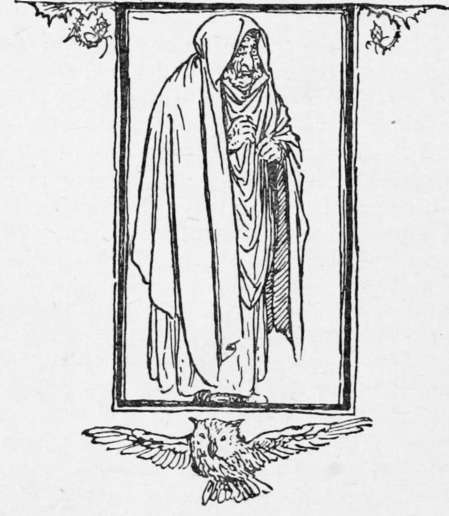

The King Of The Golden Mountain. Continued
Description
This section is from the book "Household Tales by Brothers Grimm", by Brothers Grimm. Also available from Amazon: Household Tales by Brothers Grimm.
The King Of The Golden Mountain. Continued
Now the white snake was an enchanted princess; and she was very glad to see him, and said, " Are you at last come to set me free? Twelve long years have I waited here for the fairy to bring you hither as she promised, for you alone can save me. This night twelve men will come: their faces will be black, and they will be dressed in chain armour. They will ask what you do here, but give no answer; and let them do what they will, beat, whip, pinch, prick, or torment you, bear all; only speak not a word, and at twelve o'clock they must go away. The second night twelve others will come : and the third night twenty-four, who will even cut off your head; but at the twelfth hour of that night their power is gone, and I shall be free, and will come and bring you the water of life, and will wash you with it, and bring you back to life and health." And all came to pass as she had said; Heinel bore all, and spoke not a word; and the third night the princess came, and fell on his neck and kissed him. Joy and gladness burst forth throughout the castle, the wedding was celebrated, and he was crowned king of the Golden Mountain.
They lived together very happily, and the queen had a son. And thus eight years had passed over their heads, when the king thought of his father; and he began to long to see him once again. But the queen was against his going, and said, " I know well that misfortunes will come upon us if you go." However, he gave her no rest till she agreed. At his going away she gave him a wishing-ring, and said, " Take this ring, and put it on your finger, whatever you wish it will bring you: only promise never to make use of it to bring me hence to your father's house." Then he said he would do what she asked, and put the ring on his finger, and wished himself near the town where his father lived.
Heinel found himself at the gates in a moment; but the guards would not let him go in, because he was so strangely clad. So he went up to a neighbouring hill, where a shepherd dwelt, and borrowed his old frock, and thus passed unknown into the town. When he came to his father's house, he said he was his son; but the merchant would not believe him, and said he had had but one son, his poor Heinel, who he knew was long since dead; and as he was only dressed like a poor shepherd, he would not even give him anything to eat. The king, however, still vowed that he was his son, and said, " Is there no mark by which you would know me if I am really your son?" "Yes," said his mother, "our Heinel had a mark like a raspberry on his right arm." Then he showed them the mark, and they knew that what he had said was true.
He next told them how he was king of the Golden Mountain, and was married to a princess, and had a son seven years old. But the merchant said, " That can never be true; he must be a fine king truly who travels about in a shepherd's frock! " At this the son was vexed; and forgetting his word, turned his ring, and wished for his queen and son. In an instant they stood before him; but the queen wept, and said he had broken his word, and bad luck would follow. He did all he could to soothe her, and she at last seemed to be appeased; but she was not so in truth, and was only thinking how she should punish him.
One day he took her to walk with him out of the town, and showed her the spot where the boat was set adrift upon the wide waters. Then he sat himself down, and said, "I am very much tired; sit by me, I will rest my head in your lap, and sleep awhile." As soon as he had fallen asleep, however, she drew the ring from his finger, and crept softly away, and wished herself and her son at home in their kingdom. And when he awoke he found himself alone, and saw that the ring was gone from his finger. "I can never go back to my father's house," said he, " they would say I am a sorcerer: I will journey forth into the world, till I come again to my kingdom."
So saying, he set out and travelled till he came to a hill, where three giants were sharing their father's goods; and as they saw him pass, they cried out and said, " Little men have sharp wits; he shall part the goods between us." Now there was a sword, that cut off an enemy's head whenever the wearer gave the words, "Heads off! " a cloak, that made the owner invisible, or gave him any form he pleased; and a pair of boots, that carried the wearer wherever he wished. Heinel said they must first let him try these wonderful things, then he might know how to set a value upon them. Then they gave him the cloak, and he wished himself a fly, and in a moment he was a fly. "The cloak is very well," said he; "now give me the sword." "No," said they; "not unless you undertake not to say, 'Heads off!' for if you do, we are all dead men." So they gave it him, charging him to try it only on a tree. He next asked for the boots also; and the moment he had all three in his power, he wished himself at the Golden Mountain; and there he was at once. So the giants were left behind, with no goods to share or quarrel about.
As Heinel came near his castle he heard the sound of merry music; and the people around told him that his queen was about to marry another husband. Then he threw his cloak around him, and passed through the castle-hall, and placed himself by the side of his queen, where no one saw him. But when anything to eat was put upon her plate, he took it away and ate it himself; and when a glass of wine was handed to her, he took it and drank it: and thus, though they kept on giving her meat and drink, her plate and cup were always empty.
Upon this fear and remorse came over her, and she went into her chamber alone, and sat there weeping; and he followed her there. "Alas!" said she to herself, " was I not once set free ? why then does this enchantment still seem to bind me ? "
"False and fickle one!" said he, "one indeed came who set thee free, and he is now near thee again; but how have you used him? ought he to have had such treatment from thee ?" Then he went out and sent away the company, and said the wedding was at an end, for that he was come back to the kingdom. But the princes, and peers, and great men mocked at him. However, he would enter into no parley with them, but only asked them whether they would go in peace, or not. Then they turned upon him and tried to seize him; but he drew his sword: "Heads off!" cried he: and with the word, the traitors' heads fell before him, and Heinel was once more king of the Golden Mountain.

Continue to:
Tags
fairy tales, children's stories, brothers grimm, household tales